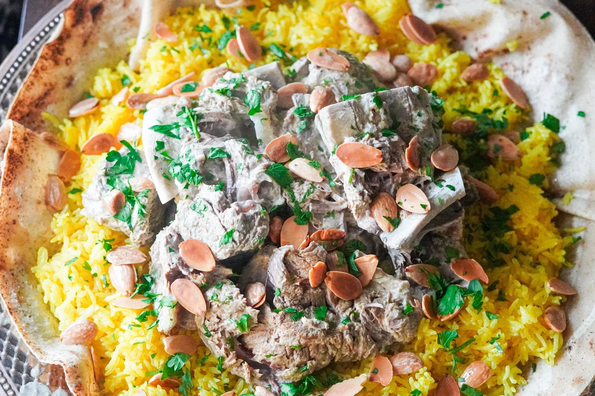

Classic Mansaf

Mansaf is definitely a unique dish in so many ways, from its ingredients to the way it tastes.
A very traditional Jordanian dish that is served at any big gathering, from weddings to funerals.
Ingredients
- 2 lbs lamb meat
- 6 cups water
- 2 crystals gum Arabic
- 4 garlic cloves
- 4 cardamom pods
- 1 cinnamon stick
- 13 Allspice berries
- 1 Bay leaf
- 2 cups rice
- 4 cups water
- 1 1/2 teaspoon salt
- Pinch of saffron
- 1 laban jameed
- 4 cups water
- 2 loaves shrak or tortillas
- 4 tablespoons almonds
- 1/4 cup chopped parsley
How to make Mansaf:
-
Cook the lamb: In this step, I pour water and put the lamb in the pot. When it is boiling, you will notice the meat will be releasing its excess fats or dirt, which I later remove all the boiled water and replace a new one. That is because in this process I am cleaning the meat through boiling.
When you replace it with clean water, turn on the fire let it boil. Once it is boiling, I add all spices and then I adjust it to low heat and cover with the lid. For the meat to become soft and tender, you will have to let it cook for 2 hours or until it becomes soft.
-
Make the yogurt sauce: To make the yogurt or laban sauce, I pour the plain yogurt and water into the blender to help liquefy the sauce.
Next, I transfer the blended yogurt sauce into the new pot, which I use the large cooking spoon to gently stir the sauce for 3 to 5 minutes. After that, I add the meat and the broth from the cooked lamb.
Lastly, in a separate pan, I sauté the chopped garlic till it turns light brown, which I transfer into the laban sauce. Add lemon juice and stir to combine to add sourness.
-
Making the yellow rice: Cooking a rice is the same like other rice dish which is easy. First, I add olive oil to the pot before I added the rice. I let it stir for 30 seconds before I add salt and turmeric powder. I give it a quick stir for one more time before I pour water into the pot
-
Assemble the Mansaf: For presentation purposes, I use a large serving plate which is common to do in our Jordanian culture.
On this plate, I put the flatbread, which I tear into small pieces, around the plate. Next, I add the rice and then the lamb meat. After that, I pour the soup around rice and lamb using the ladle spoon.
And lastly, before you dig in, sprinkle with chopped parsley and fried almonds or any nuts you like. In my opinion, the nuts are not needed in this dish since they wouldn't make any difference in terms of taste.